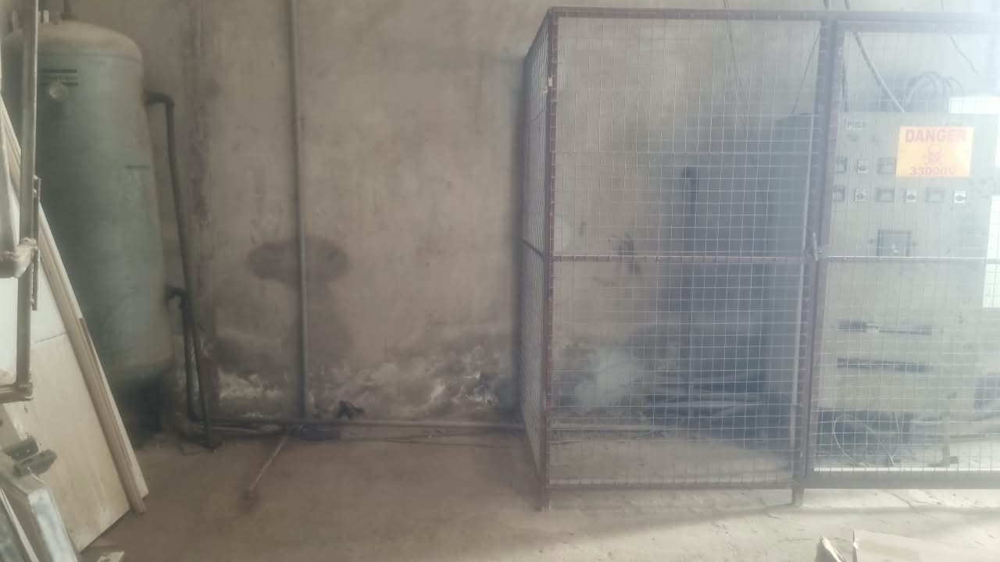

Power automation, for any source.
Grid, generator, solar or battery: automatic transfer switches and control panels that put the right source on your loads at the right moment, without anyone running to flick a switch.
Every source in, one safe output.
An automation panel watches each supply and decides, in the order you choose, which one feeds your building. It works with what you already have, whether or not you have solar.
From a single ATS to a full control panel.
Automatic transfer switches (ATS)
Moves your load between two supplies, such as grid and generator, the moment one fails, with mechanical and electrical interlocks so sources can never be connected together.
Generator auto-start & stop
Mains-failure control that starts the generator, lets it warm up, transfers the load, then hands back to the grid and cools the engine down before stopping it.
Multi-source priority
Grid, solar, battery and generator in the order you set. For example: solar first, then grid, generator only as the last resort.
Load shedding
Drops non-essential circuits such as air conditioning or water heaters automatically when running on a generator or battery, so the important loads keep running longer.
Voltage protection
Under- and over-voltage and phase-failure protection that disconnects before an unstable supply can damage equipment, then reconnects when it settles.
Monitoring & alerts
Status of every source at a glance, with alarms for failed starts, low fuel signals or a supply that won't return.
What happens when the grid goes off.
A typical grid-and-generator sequence. Every delay is adjustable, and with a battery in the system your loads don't even notice the gap.
- 1
Grid fails or goes unstable
The controller sees the voltage drop out or drift outside safe limits.
- 2
Generator starts
After a short confirmation delay to ignore flickers, it sends the start signal and waits for stable voltage and frequency.
- 3
Load transfers
The ATS switches the building to the generator, shedding non-essential circuits if you've set it to.
- 4
Grid returns
The controller waits until the grid has been stable for a set time before trusting it again.
- 5
Back to grid, generator cools down
Load moves back to the grid and the generator runs off-load to cool before it stops, ready for the next outage.
Built for sites that can't wait for someone to switch over.
Homes & estates
Automatic changeover between grid, inverter and the estate generator, day or night.
Offices & hotels
Seamless source changes with load shedding to protect generator fuel.
Hospitals & clinics
Fast, reliable transfer for essential circuits, paired with UPS-grade storage for critical ones.
Factories
Coordinated changeover for large loads, multiple feeders and generator sets.
Telecom, pumping & remote sites
Unattended sites that must restart themselves after every outage.
Retrofits
Added to your existing distribution board and generator, with no need to replace what works.
Tell us what powers your site today.
Your supplies, generator size and the circuits that matter most. We'll design the automation around them.